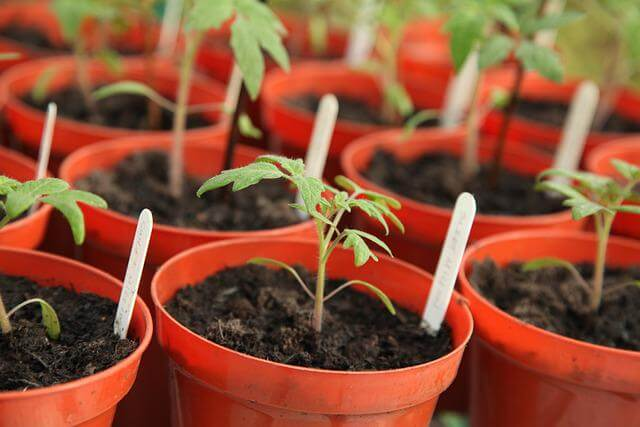
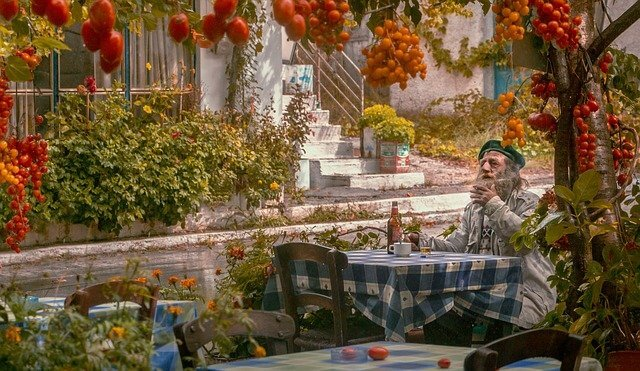
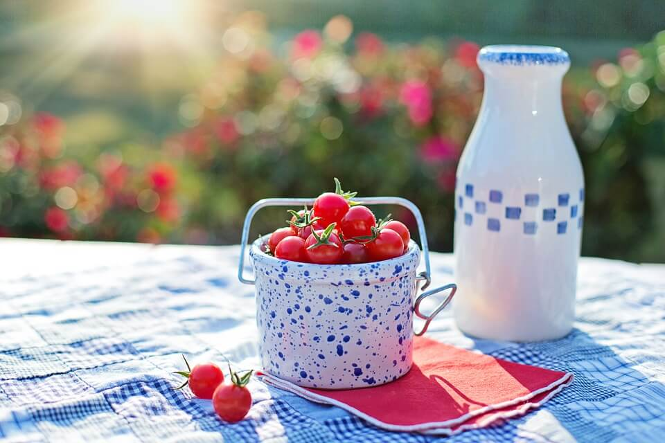
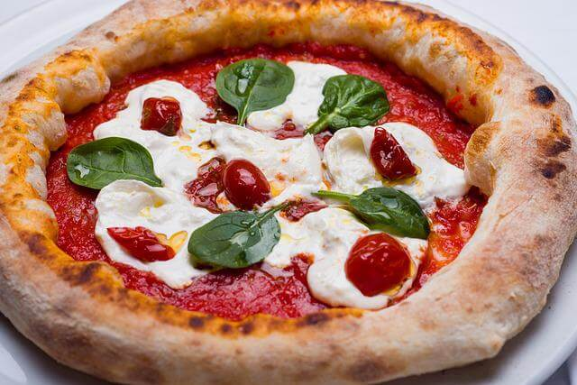
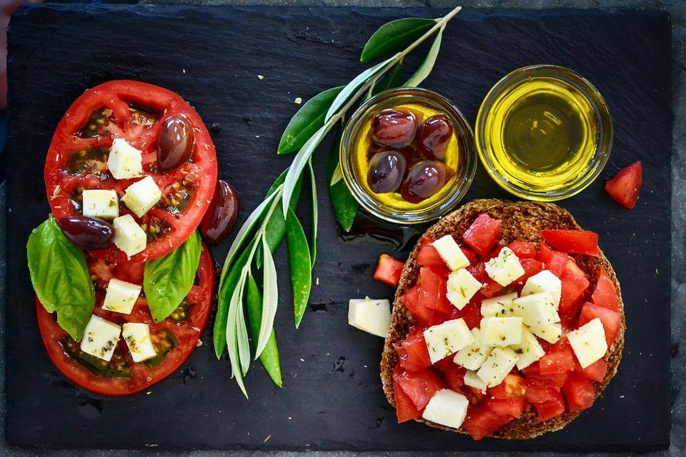
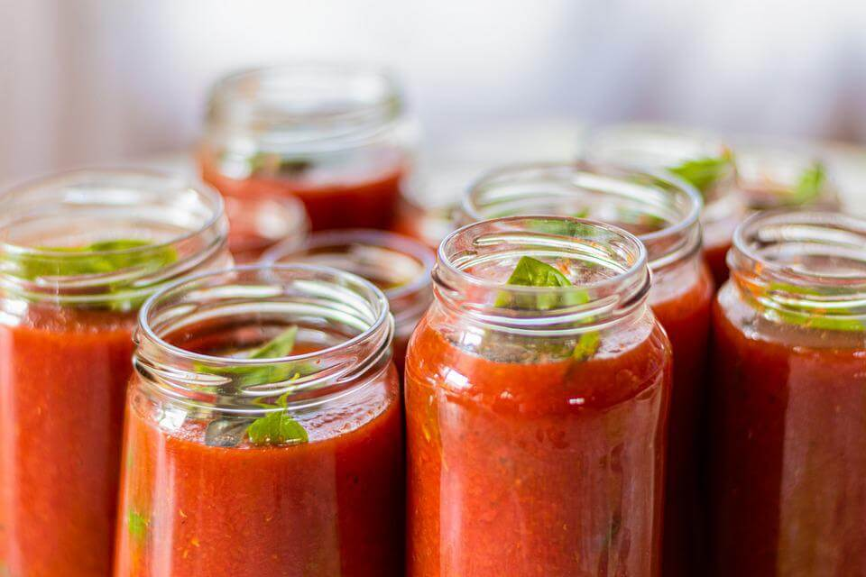
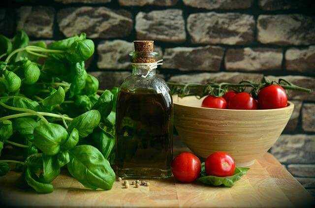
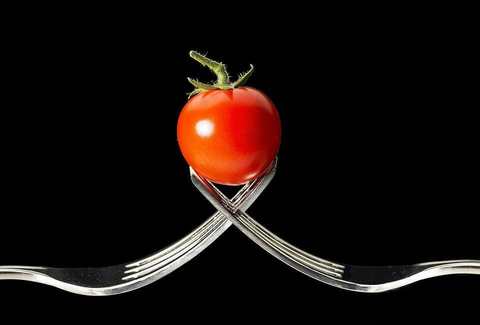

*
Помидор был выращен ацтеками и назывался кситомат (“пышка с пупком”).
*
Вес самого большого помидора, выращенного человеком, составлял 3,5 килограмма. Рекордный урожай был получен в Оклахоме (США) в 1986 году.
*
Немногие знают, что жизнь помидора не обязательно ограничивается одним сезоном. Если дать растению свет и тепло, оно будет жить и расти много лет.
*
Спелые помидоры не обязательно красные. Есть и другие: розовые, жёлтые, фиолетовые, почти белые и почти чёрные.
*
Насколько большим может вырасти помидорный куст? Мировой рекорд принадлежит растению, которое занимает 56,73 квадратных метров.
*
Словом “кетчуп” первоначально называлась китайская рыбная подливка. Помидоры были добавлены в этот рецепт, а потом вытеснили рыбу.
*
“Волчий персик” – это дословный перевод научного названия помидоров Lycopersicon lycopersicum.
*
Листья и стебли помидора ядовиты, равно как и недозрелые плоды. Они содержат атропин и другие токсичные тропановые алкалоиды.
*
Впервые в Европе итальянский врачом и ботаник Пьетр Андреа Маттиоли в 1544 году упомянул помидор, назвав растение “pomo d'oro” (“золотое яблоко”).
В январе я начал планировать семена, которые посажу в феврале. К середине февраля у меня в стиральной машине выросли небольшие джунгли (единственное место в доме, где кошки не могли добраться до растений).
Перенесемся в март, и саженцы направляются в сад, а к августу они процветают и продолжают плодоносить. Потому что да, я выбрал индетерминантные помидоры, не зная, что это значит.
ВЗРЫВ ВСЁ
ДЕЛАЕТ КРУЧЕ!
Разрезаем помидоры на несколько частей. Вырезаем сердцевину.
  Заполняем кастрюлю с толстым дном, солим, перчим.
   Добавляем стакан воды, варим 20 минут.
Измельчаем блендером, разливаем по банкам.